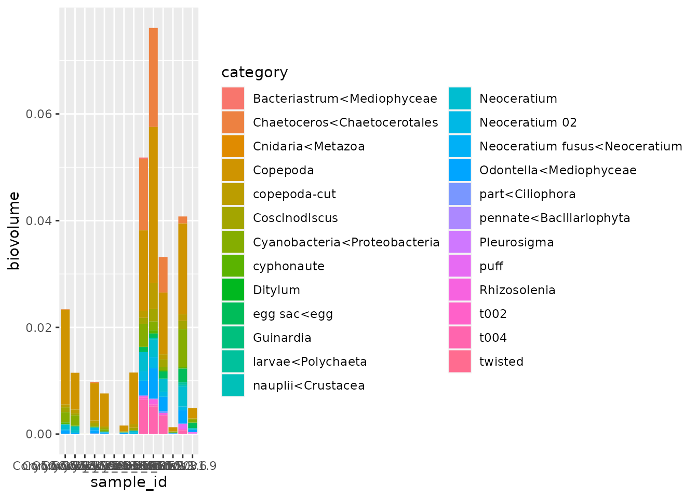
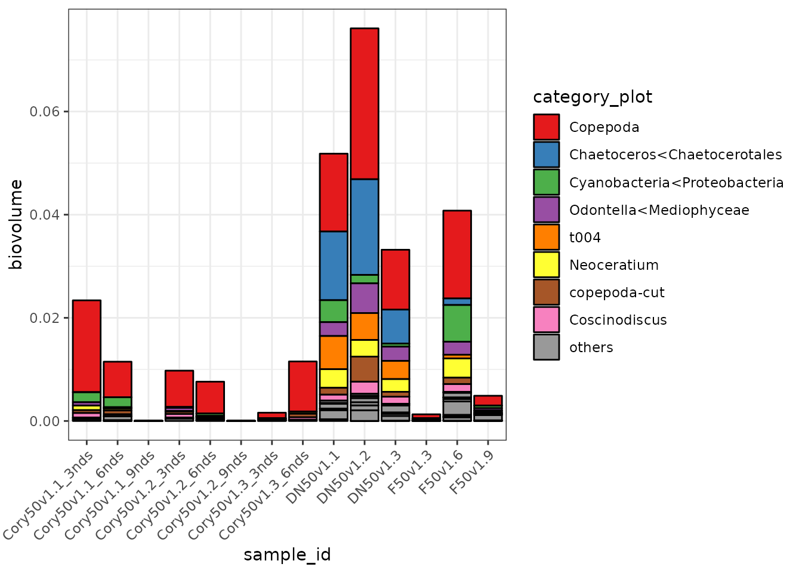
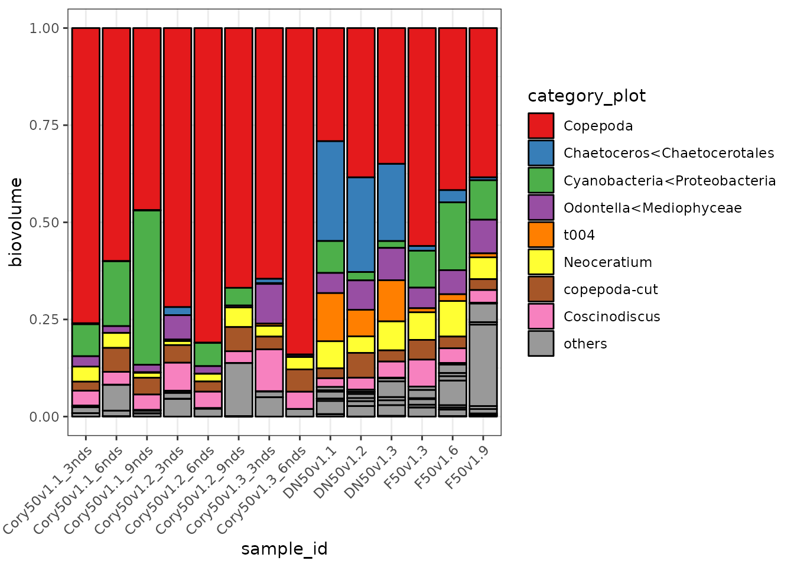
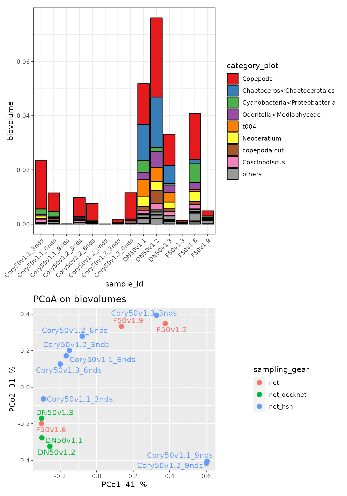
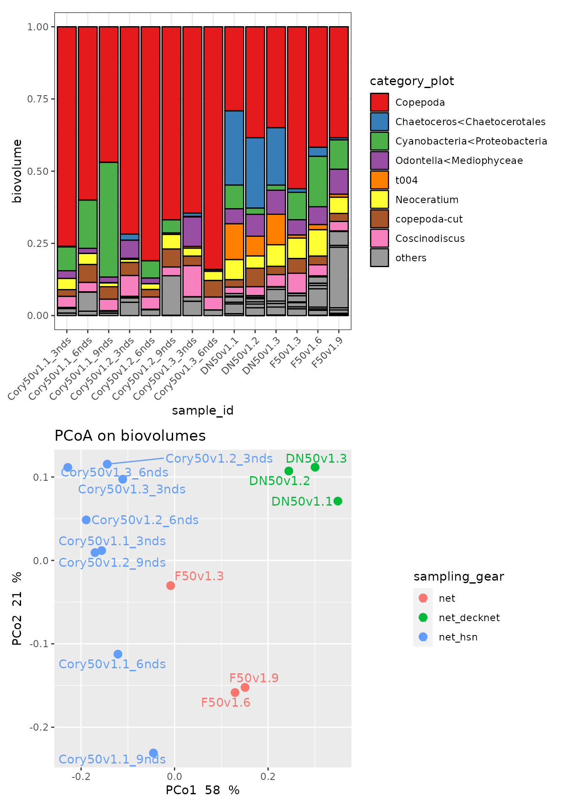
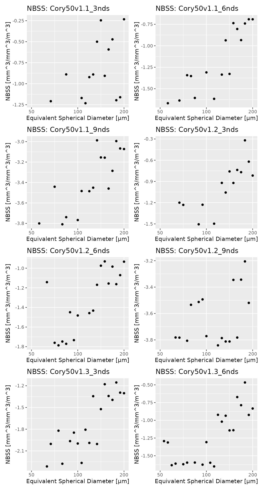

Analyse Planktoscope data
vignette.RmdIntroduction
This is an example of usage of this package on a small dataset, global.tsv. This tsv file contains 8 samples, from 3 different nets.
Analyses
Import data
The first step is to import the tsv file in R. To do so, we use the function import.data(). We decide to omit the categories "not-ling", "duplicate" and "multiple" we consider as not relevant for the analysis.
toy_dataset <- system.file("extdata", "global.tsv.gz", package = "planktoscopeR")
data <- import.data(toy_dataset,
unwanted = c("not-living","duplicate","multiple"))Then we aggregate the data per category with the function get.counts.and.vol(). It basically consists in counting objects and summing volumes.
data_distrib <- get.counts.and.vol(data)We also extract the information related to the samples with the function get.info()
context <- get.info(data,type="sample")We can now start to analyse data.
Taxonomic composition
A quick way to have an overview of the taxonomic composition of our sample is to produce barcharts coloured by taxonomic groups.
ggplot(data_distrib,aes(x=sample_id,y=biovolume))+
geom_col(aes(fill=category))
That plot doesn’t look good. Let’s tune it a bit!
We use the function plot_categ() to limit the number of categories (colours) to 9…
plot_categ(data_distrib,"category","biovolume")add change the colour palette scale_fill_brewer(), change the theme with theme_bw() and rotate the x axis labels
taxoplot_biov <- ggplot(data_distrib,aes(x=sample_id,y=biovolume))+
geom_col(aes(fill=category_plot),col="black")+
scale_fill_brewer(palette = "Set1")+
scale_x_discrete(guide = guide_axis(angle = 45))+
theme_bw()
taxoplot_biov
We observe big differences in term of total biovolume, but it is hard to see the differences in composition. Using the option position="fill" in geom_col you have all the bars at the same height facilitating the comparison.
taxoplot_biov_total <- ggplot(data_distrib,aes(x=sample_id,y=biovolume))+
geom_col(aes(fill=category_plot),col="black",position="fill")+
scale_fill_brewer(palette = "Set1")+
scale_x_discrete(guide = guide_axis(angle = 45))+
theme_bw()
taxoplot_biov_total
Beta_diversity
For this section we will use functions from the library vegan which contains most of the functions you need to do community ecology analysis.
Beta diversity is the ratio between local diversity (alpha diversity) and regional diversity (gamma diversity). Beta diversity is often estimated measuring the species composition rate of variation. In other words, it is how much the species composition between two samples varies.
We will use Bray-Curtis dissimilarity, one of the most popular dissimilarity measures in ecology, to compare the samples.
First we transform the count table in a format we can directly use with the functions from the library vegan.
biovolume_df <- get.df.vegan(data_distrib,"biovolume")We compute Bray-Curtis dissimilarities on biovolumes.
d.bray <- vegdist(biovolume_df)To be able to visualize the dissimilarities (beta diversity) in two dimension we perform a Principal Coordinates Analysis (PCoA).
pcoa <- cmdscale(d.bray,k=2,eig=T)We extract the results and link them with the sample description…
pcoa.plot <- data.table(id=row.names(biovolume_df),
PCo1=pcoa$points[,1],
PCo2=pcoa$points[,2])
pcoa.plot <- merge(pcoa.plot,context[,list(id,sampling_gear)],by="id")and visualize the results using ggplot2. We plot on top of the PCoA the taxonomic composition barcharts (biovolumes).
pcoa_biov <- ggplot(pcoa.plot,aes(x=PCo1,y=PCo2,color=sampling_gear)) +
geom_point(size=3) +
geom_text_repel(aes(label=id))+
labs(title="PCoA on biovolumes",
x = paste("PCo1 ",round(100*pcoa$eig[1]/sum(pcoa$eig))," %"),
y = paste("PCo2 ",round(100*pcoa$eig[2]/sum(pcoa$eig))," %")) +
theme(plot.title.position="panel")+
coord_fixed()
taxoplot_biov/pcoa_biov
We observe that most of the beta diversity is due to differences in total biovolumes.
As it is frequent to have problems with the calculation of filtered volumes, it is worth analysing standardized biovolumes.
To do so, we standardized the data with the function vegan::decostand()
biovolume_df_total <- decostand(biovolume_df,method = "total")Then, the analysis is the same as before.
d.bray<-vegdist(biovolume_df_total)
pcoa<-cmdscale(d.bray,k=2,eig=T)
pcoa.plot<-data.table(id=row.names(biovolume_df_total),PCo1=pcoa$points[,1],PCo2=pcoa$points[,2])
pcoa.plot <- merge(pcoa.plot,context[,list(id,sampling_gear)],by="id")
pcoa_biov_total <- ggplot(pcoa.plot,aes(x=PCo1,y=PCo2,color=sampling_gear)) +
geom_point(size=3) +
geom_text_repel(aes(label=id))+
labs(title="PCoA on biovolumes",
x = paste("PCo1 ",round(100*pcoa$eig[1]/sum(pcoa$eig))," %"), # percentage explained by the first component
y = paste("PCo2 ",round(100*pcoa$eig[2]/sum(pcoa$eig))," %")) +
theme(plot.title.position="panel")
taxoplot_biov_total/pcoa_biov_total
Now we see that the difference are mostly explained by the sampling gear used.
NBSS plots
You can also show NBSS plots. These correspond to the normalized biomass size spectra.
#
sample_selection <- context[sampling_gear=="net_hsn",id]
data_selection <- data[sample_id%in%sample_selection]
res <- lapply(split(data_selection,by="sample_id"),function(X){
NBSS.plot(X)
})
wrap_plots(res[1:8],nrow = 4,ncol=2)